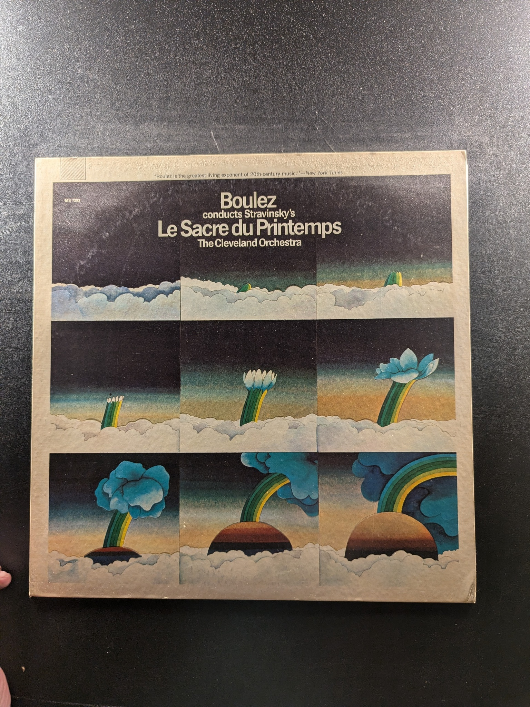
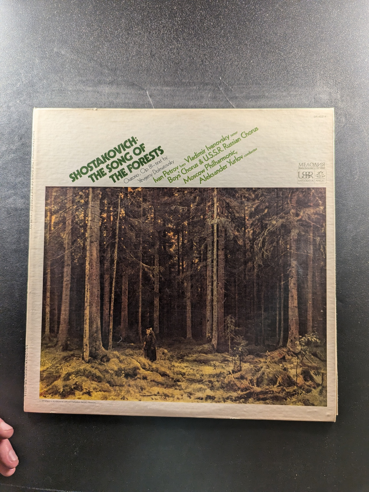

Concerto For Orchestra
Bartók
London ffrr Stereo Treasury Series STS 15110

Symphony No. 1 in D Major
Mahler
Nonesuch H-71030
Le Sacre du Printemps
Boulez conducts Stravinsky's The Cleveland Orchestra
M 33229
Robert Frost Reads His Poetry
Robert Frost
Caedmon TC 1060
West Side Story
Various Artists
Columbia Masterworks OS 2001
King of the Delta Blues Singers, Vol. II
Robert Johnson
Columbia C 30034
Song to a Seagull
Joni Mitchell
Reprise Records RS 6293
The Golden Age of Harpsichord Music
Rafael Puyana
Mercury Records SR90304
Eroica
Beethoven
RCA Victrola VICS-1065
The Mozart Piano Sonatas, Vol. 3
Glenn Gould
Columbia Masterworks MS 7073
The Mozart Piano Sonatas, Vol. 4
Glenn Gould
Columbia Masterworks M 32348
The Two and Three Part Inventions
Glenn Gould
Columbia MS 6802
The Mozart Piano Sonatas, Vol. 2
Glenn Gould
Columbia Masterworks M 32312
Carmina Burana
Carl Orff
Deutsche Grammophon Gesellschaft 139 362
1812 Overture
Tchaikovsky
VOX STPL 511.690
The Well-Tempered Synthesizer
Walter Carlos
Columbia MS 7286
Symphonies Nos. 25, 29 and 32
Mozart, Colin Davis, London Symphony Orchestra
Philips PHC 900-133
The Partitas for Harpsichord No. 3 in A minor; No. 4 in D
Igor Kipnis
Angel S-36078
Austrian Music for Harpsichord and Clavichord
Igor Kipnis
Odyssey
Et Exspecto Resurrectionem Mortuorum / Couleurs de la Cité Céleste
Olivier Messiaen
Columbia Masterworks MS 7222
Symphony of Psalms
The Robert Shaw Chorale
RCA Victor Red Seal LSC-2822
The Moldau
George Szell, The Cleveland Orchestra
Columbia Odyssey Y 30034
Petites Liturgies De La Présence Divine
Messiaen
Westminster Gold WGS-8177
The Song of the Forests
Shostakovich
Melodiya S10 40341-4
{kind=link}
{kind=link}
{kind=link}
{kind=link}
{kind=link}
{kind=link}
{kind=link}
{kind=link}
{kind=link}
{kind=link}
{kind=link}
{kind=link}
{kind=link}
{kind=link}
{kind=link}
{kind=link}
{kind=link}
{kind=link}
{kind=link}
{kind=link}
{kind=link}
{kind=link}